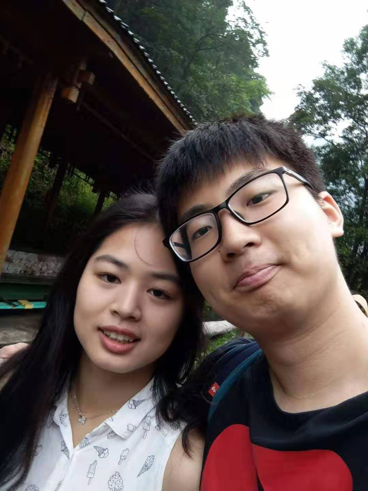

About
Pan Morg Chu

- Pan M. Chu is a student who majors in bioengineering, especially in synthetic biologyand quantitative systems biology. Now, he is studying at Institute of Synthetic Biology(iSynBio).
- Contact: pan_chu@outlook.com
Witton Zhang
- Witton Zhang, she is a doctoral candidate in City University of Hong Kong (cityU). She is focusing on bioinformatics.
- Contact: weitongcheung@outlook.com